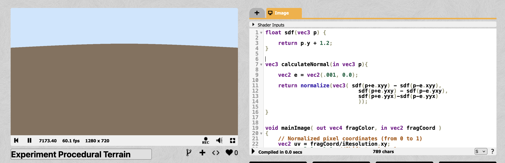
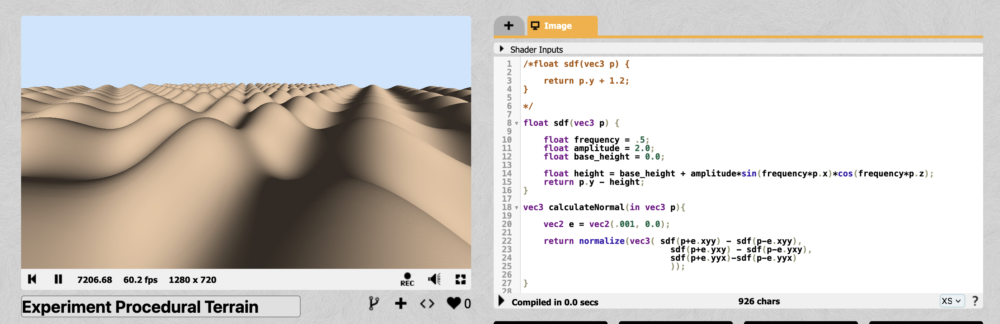
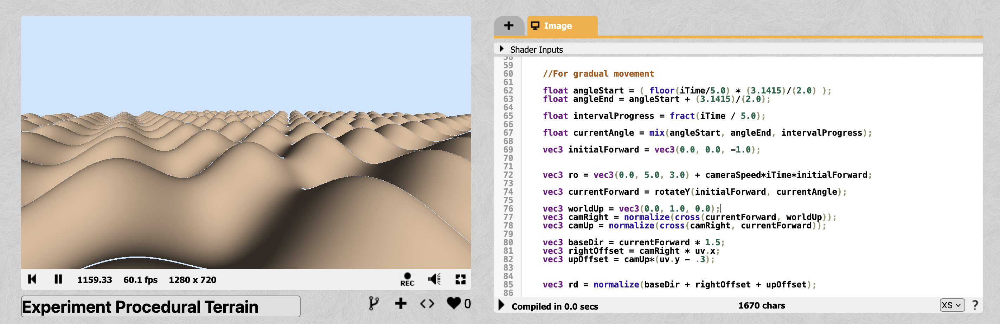
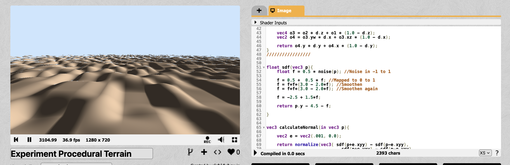

I started out by building a plane sand terrain first, which could just be an SDF (signed distance function) constant distance from the y plane:
Then to try a simple formula for sand dunes, I tried with a combination of sin and cos waves across our x - z axis. X and Z axis are across the screen while the y axis moves up and down.
The shadows in our sand dunes come from diffused lighting:

This is standard calculation for lighting where we get the color of a texture by multiplying it with the dot product of viewing direction and light direction (so if you are looking directly at the sand dunes from the direction of the light, you will see actual color of the sand dunes, but you will see darker color (lesser incident light) if you are inclined away from the light).
For camera movement, first is the always forward moving camera - for which I multiplied the camera origin by iTime and some constant value which indicates the speed of the camera. Then for rotating the camera around the world, I multiplied ray direction by shifting the forward facing camera direction by 90 degree every 5 seconds for gradual movement by using a mix function.
To get more complex sand dunes structures, I experiment with perlin noise instead of cos and sine waves
One can get more indented textures and rougher details in the sand dunes by using Fractal Brownian Motion - which is just adding more perlin noise on top of the existing perlin noise but with smaller amplitudes and higher frequencies. We can do this addition as many times as we want but it slows down the fps of the rendering. I also started experimenting with ideas for clouds at this point.

For clouds, I again used perlin noise (with FBM) and mapped it to the screen and tried to cover between 40 - 70% with clouds based on perlin noise value with ray direction for randomness.


Night sky looks better for a dreamy world, hence I tried with darker shades of skycolor and pinkish violet color for the clouds. I also added fog (by using air as a participating media) in the scene so that it look more natural - dunes farther away look more darker now.
With Fog:

Without fog:

Then I added stars, which are the most magical part of the entire scene. I added stars by using - take a guess - yes! perlin noise again. I made them twinkle by dimming their colors based on sin wave and also made the twinkling random by again using perlin noise to decide which group of stars will twinkle in a particular period. I also made sure that the entire sky does not get dimmed by restricting the dimmness of the star to 30% of its maximum brightness.

Now that I think about it, it would be really cool to add shooting stars too! 🤩
Then I added a moon, which is just solid white color in a particular radius of viewing angle (to make it round) and gave it a glow around its edges by mixing color with slightly dimmer white.

Finally I added water by checking a threshold value for the height of the sdf, i.e, if the terrain is below 2 units, it is a potential place to have a lake. I did not want every area with lower than 2 hit to get a lake since that looked very boring. Hence I added a perlin noise here too to randomly place water at locations around the scene. To render the water, I used fresnel diffraction, which includes calculating viewing angle to change how much reflection of the sky is present in the lake.
 So, this is what the final render then looks like:
So, this is what the final render then looks like:
Link to the shadertoy: https://www.shadertoy.com/view/33BXDw
Video of the final render: https://youtu.be/BwjAYHWadrU